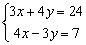

聯立二元一次方程式
這個功能其實是應用了計數中的內置線性回歸功能，可以解的聯立二元一次方程的形式如下:
x + Ay = B
x + Cy = D
若果不是以上形式亦可以將每一方程的x係數除以該方程轉化為合適的形式，而這個方法有一個限制就是方程式的x係數不可以為零。
例題1: 解聯立方程 :

按 MODE 3 再按 1 xDyD 7 DATA 1 +/- xDyD 1 DATA
SHIFT 7 (顯示A為4) SHIFT 8 (顯示B為3)
因此解答為 x = 4 及 y = 3.
例題2: 解聯立方程 :

按 MODE 3 再按 4 ab/c 3 xDyD 24 ab/c 3 DATA
3 +/- ab/c 4 xDyD 7 ab/c 4 DATA SHIFT 7 (顯示A為4) SHIFT 8 (顯示B為3)
因此解答為 x = 4 及 y = 3.
註: 若果方程係數不是整數，分號可以改為除數的計算，例如: 4 ab/c 3可以改為 4 ÷ 3 =
計算完結後， 按 MODE 1 返回正常計算模式。